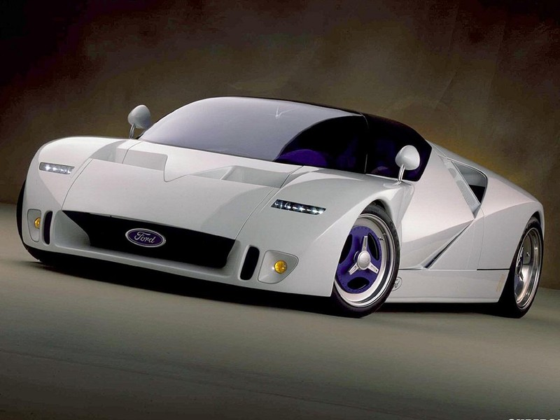
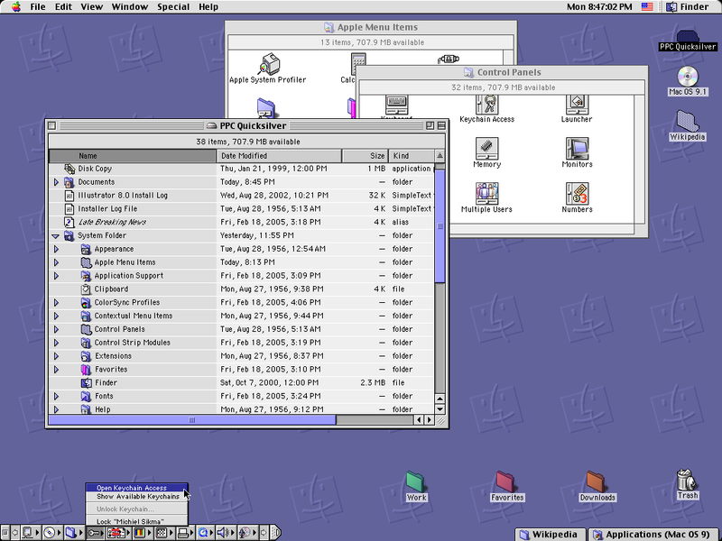
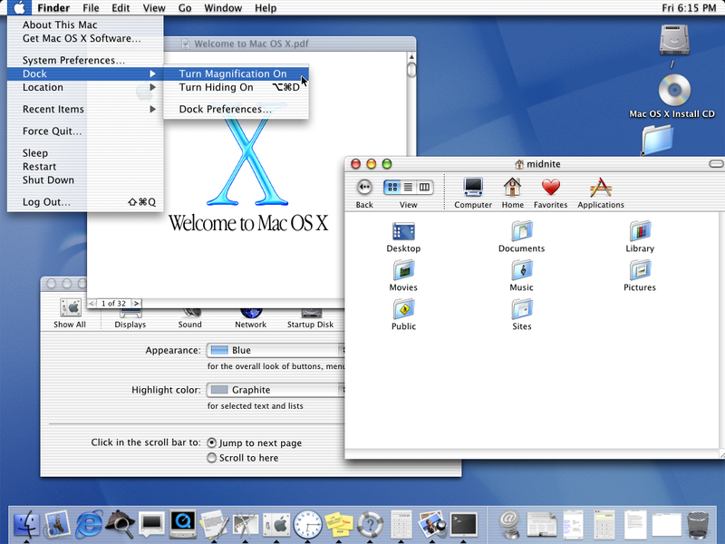
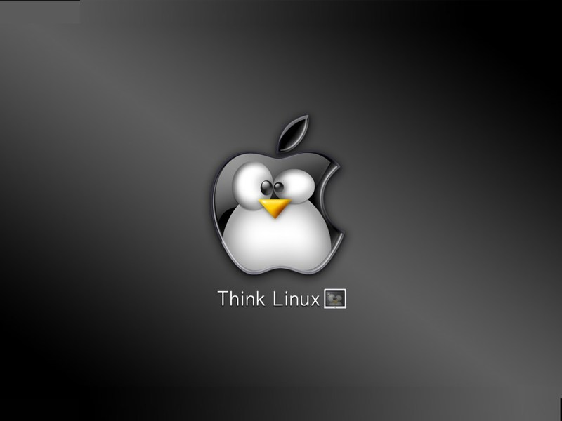

Apple's iPod and iPhone may be sexy and profitable, but these small devices are specialized in function, so there isn't a lot to say about them. An iPod is busy when playing music, whereas when your computer plays music, it uses less than 1% of its computing power, which is not even noticeable.
For most of Apple's existence, they never really got the idea of the relationship between market share and a developer community. For example, Macs have historically not been allowed in enterprises because no one added the necessary features and applications — because it never got the requisite market share to make anyone want to bother.
Microsoft understood the virtuous cycle between users and developers, and knew that making it easy to build applications would make Microsoft's ecosystems successful. Bill Gates brags that Microsoft has ten times as many partners as Apple, and tools like Visual Basic and FrontPage were important reasons why.
This internal focus that has limited the Mac's potential marketshare is now playing itself out with their new devices. Symptoms of this mindset are noticeable in the most basic scenarios: you cannot drag and drop music on and off an iPod, as you can with a digital camera. Even if you could copy over your files, unless it is in one of the few formats Apple can be bothered to support, you would still not be able to play it.
While Moore's law will push these new devices further up the computing value chain, it isn't clear Steve Jobs understands the value of having a developer community extend his platforms because he doesn't see past the potential complexity it creates. In a New York Times interview , Jobs said he would not allow third-party technology contributions to his new iPhone because he doesn't want the telephone network brought down by “rogue applications”.12
Apple later reversed-course and now there are now third-party apps available for the iPhone, and Apple even runs ads touting a capability they initially shunned, but Apple's mindset of ignoring the outside world is still embedded into its culture. When the iPhone software development kit (SDK) was launched, third-party iPhone developers were : “legally banned from sharing programming tips, discussing code or asking questions of one another in forums or over e-mail.” Note that an SDK only contains the public information necessary for a developer to write an app, so why they would be so restrictive is inexplicable.
After lots of complaints by developers who were unable to get their code working, and yet were not able to talk to each other, Apple in October 2008 reversed course here as well, so maybe they are slowly learning that not all good ideas originate in Cupertino.
One of the reasons Microsoft has won so many battles is that it knows the key to success is to just get early market share and let Metcalfe's law take over, with the ensuing profits. Steve Jobs is presumably satisfied with Macintosh's 3.5% worldwide marketshare and the state of the iPod today. It is this attitude that ultimately will ensure their failure, I believe. Apple's motto for a time was “Think Different” but a more apt one might be “Think Small”.
In stumbling upon the business of building fashionable music players, Apple has touched upon one of the important questions of the digital age: How do we acquire and archive our music?13 If we do it right, we can store our music in one format for decades, even forever.
A digital format is something not tied to a hardware medium in the way that the VHS format was tied to VHS tapes; everything digital can be copied to a hard drive or a USB key. (Iraqi terrorist Abu Musab al-Zarqawi's death was a big setback for al-Qaeda because we recovered a USB key containing his terrorist documents and music. One day, the only thing we will ever need to waterboard terrorists for is their passwords.)
We have been able to create basically one format for digital cameras — JPEG, which is free and efficient. We should have been able to do this for audio as well because the underlying math is similar!
Apple made the digital audio format problem worse by endorsing one that only they use, AAC. And, by adding DRM, they only allow you to play your music on their one device and in their one application. Apple has added hassles and created doubt about whether you will ever control, and therefore truly own, your music.
Steve Jobs is ecstatic that iTunes has sold 2.5 billion songs in five years, but when you consider that the music business is a $40-billion-dollar per-year industry, and Apple has no serious competitors in digital music, that number is modest.
I've met many people who have told me that they won't buy an iPod again because of these and other issues. In fact, I run an alternative OS on my iPod, called Rockbox.14 It supports more audio formats, lets me copy files back and forth like you can with a digital camera, it even sounds better because of a feature known as “crossfeed”. (When you listen to music on room speakers, each ear can hear music, slightly delayed, from both the left and right channel. However, this does not happen with headphones. Rockbox uses clever algorithms to simulate the sound from the opposite channel, slightly delayed, to make headphones sound more natural.)
Rockbox also comes with more software and other advantages. It is perfectly logical that the free software community can do a better job than Apple because Apple likely had 20 software developers writing code for the iPod device, whereas Rockbox has had more than 300 contributors, and itself reuses a lot of other free code.15 Even worse for iPod's future, I suspect that Apple scavenged some of the best people from their iPod team when staffing up iPhone — Microsoft would have done so.
Apple is now reversing course and providing more music DRM-free, but they are still making it difficult to put music onto your device, not letting other devices play the songs in your music library, and are now preventing the installation of third-party software on their new hardware. It is only because Apple has such little overall marketshare that they can get away with this sort of behavior.

Apple giving about as much attention to the iPod as the Mac is like Ford focusing their R&D on bling because they suddenly started making half of their profits on chrome rims.
Compared to the task of decoding compressed music, the word processor I used to compose this book is 1,000 times more complicated. So, what about Apple's computers? The first relevant fact is that Apple is making half of its profits in the (currently) profitable portable device market which has caused Apple to lose interest in the computer as the most powerful tool ever created.
Apple's computers have an elegant hardware design, but the biggest difference between a Mac and a PC is that Apple's computers run a completely different pyramid of software, that is mostly proprietary like Microsoft's.
From its introduction in 1984 till 2001, the Macintosh ran a kernel built by Apple for its first Macintosh. It was written in Motorola's assembly language, and didn't have memory protection, preemptive multitasking, and many other features of a kernel you would read about in a college textbook. In the late 1990s, this caught up with Apple as Macintoshes were considered unreliable.
Apple eventually threw away their original kernel in creating Mac OS-X 10.0, but it took them a while to get going on it as they had four CEOs in the 1990s.

Mac OS 9, the last release of the original Apple kernel and the official version until 2001.

Mac OS-X, Macintosh's first release based on a kernel that is free software.
Apple's second kernel wasn't built from scratch, but is based heavily on Berkeley Software Distribution (BSD) Unix code.16 This code is a lot like Linux, but with a smaller development community and a non-copyleft license agreement. That Apple is depending on a smaller free kernel community, and yet doing just fine, does say something about free software's ability to deliver quality products. Apple's new kernel is certainly much better than the one they tossed away after 20 years of investments!
Portion of the Unix family tree. The biggest reason why Unix and Linux hasn't beaten Windows yet is that the workstation vendors didn't work together on the software, and so kept re-implementing each other's features.
Unfortunately, in choosing this software, Apple gave life support to a group who should have folded their code and resources into Linux. The free software community can withstand such inefficiency because it is an army of millions, but from a global perspective, this choice slowed progress and hurt Apple's customers.17
Apple didn't publicly say why it chose BSD over Linux, but at the time it was widely surmised that one of the biggest reasons was that Apple feared the copyleft aspect of Linux's GPL license. Apple didn't understand that it is perfectly legal to ship proprietary code on top of Linux.
However, Apple should have asked itself why it chose a free kernel as the foundation of its future software, but not other free code. Apple has not embraced free software, even though it has come to depend on it, and Apple's software total less than 10% of revenues! Apple's hardware team should be happy to run Linux or Windows on its machines. With Macintosh at 3.5% marketshare, PCs are 30 times more an opportunity than a threat.
Supporting other OSes is no big feat of engineering; for a period of time, Linus did his Linux development on a Mac — after discarding all of Apple's software. If Apple did decide to go aggressively after the PC OS market, it would need to make just a few hardware changes: their keyboard is not quite suitable, and they have stubbornly resisted the move to two-button mice. Apple already produces a multitude of keyboards for different writing scripts, so they already understand the necessary work.

In a better iWorld, Apple would have used Linux instead of BSD.
With less of an internal focus, Apple could even have done a few things to make their OS more compatible with Windows, to increase sales and to better tempt Windows users into switching. There is plenty of free software out there to enable interoperation with Windows technologies. Out of the box, Windows Media is treated by the Mac like a text file; there is code out there to fix this, but Apple doesn't provide it. It's as if supporting Windows Media is a concession that weakens Apple. We aren't even talking about having music-creating software support that format — simply the ability to play these files!
Their iChat program doesn't support MSN messenger, though it does support AOL and Yahoo. Given the unnecessary hurdles Apple has created for Windows users, it is not surprising that their market share remains so low. There is even a free Win32 implementation known as WINE that would allow Windows software to run on the Mac; yet another way to storm Microsoft's beachfront that Apple hasn't adopted.
Apple creates proprietary software because they use it to bundle with their hardware, and to lock you into their platform. However, the threat of free software is already approaching Apple. The Linux community is currently focused on building “the Web and Office”, the minimum necessary to build a platform that competes with Windows. Once these are covered and more people start using Linux, then Linux contributors can focus on building video-editing software, and other features that Apple has leveraged to carve out its niche. In fact, supporting the few relevant Apple standards like QuickTime is a much simpler problem than supporting Microsoft's many complicated and popular standards.18
When I visit coffee shops, I increasingly notice students and computer geeks purchasing Macs. Students have limited budgets and so should gravitate towards free software. If Apple doesn't support free software, their position in the educational market is threatened.
Many computer geeks buy a Mac because of its Unix foundation. For example, in the terminal window of both the Mac and Linux, if you type “ps -a”, you see the list of processes. (Windows doesn't support the rich Unix command-line world except via an add-in that is little used by Microsoft or third-party developers.) Apple has good Unix compatibility only because their programmers never removed it. It was never a goal of the Mac OS-X to appeal to geeks — Apple just got lucky. Smartly, Apple now mentions Unix compatibility in their marketing material.
As a long-time Windows user, and a Linux convert, I tried out the Mac OS X for a couple of days. Here are some of my impressions:
A Mac OS has more code than ever before, and a lot of it is based on free code, but it doesn't have a repository with thousands of applications like Linux. There are several third-party efforts to provide this feature, but none are blessed or supported by Apple. The Mac comes free with iPhoto, but they really want me to buy Aperture for $159, which they tell me just added 100 new features! Apple ships a new OS every year, but you don't get free upgrades — it costs $140 to upgrade from OS X 10.4 to 10.5.
Many of the Mac's UI details like how to maximize windows, and shortcut keys, are dis-similar from Windows. Linux, by contrast, feels much more natural to a Windows user. Another example: when you double-click on a picture, it loads the iPreview application that stays around even after the window displaying the picture is closed. How about just creating a window, putting the picture in that window, and having it all disappear when I close the window? I tried to change the shortcuts to match the Windows keystrokes, but their software contains bugs because it didn't change it in all applications.
The Mac feels like a lot of disparate pieces bolted together. The desktop widgets code has its own UI, and it doesn't integrate well into the OS desktop. The Spaces is a clone of an old Unix feature and doesn't implement it as well as Linux does. (For example, there is no easily discoverable way to move applications between spaces.)
As mentioned above, the Mac doesn't support as many of the Microsoft standards as Linux does. One of the most obvious is WMA, but it also doesn't ship with any software that reads and writes DOC files, even though there is OpenOffice.org and other free software out there.
It is less customizable. I cannot find a way to have the computer not go to sleep when the laptop screen is closed. The mouse speed seems too slow and you can only adjust the amount of acceleration, not the sensitivity. You neither resize the system menu bar, nor add applets like you can with Linux's Gnome.
Having used all three, it is my view that Linux is better than the Macintosh, which is better than Windows Vista. I hear that internally, Microsoft is very afraid of the Macintosh, but Linux presents a greater long-term threat.
Apple has been good for Linux because it has forced software vendors to think about writing cross-platform code. By using free software like the BSD Kernel, Apple is more of a part of the free software community than before, although not by much. Apple's web browser Safari is based on the engine WebKit, which Apple derived from the free KHTML, but they worked for a year on the fork before attempting to integrate their changes back, and KHTML developers said that their relationship with Apple was a “bitter failure.”
Apple does use Apache, and oversees the printing system CUPS, but they have proprietary office-type applications, and a variety of multimedia and other tools. They are neither using a fraction of the free software they could, nor releasing much of their code as free software.
Can Apple's software stand alone?
In general, other free software should be looked at as an opportunity for Apple. But what about making all of Apple's software free? If Apple's software were made free, Apple could work more closely with the global free software community and create a better product for their customers. However, the downside is that this software could get ported to Windows and Linux, and create less reasons to purchase a Mac.
However, if a Linux desktop takes off, Apple's OS will suffer the same fate as Windows and force Apple into being a hardware-only company like Dell and the rest, all the value they have built up will be gone. Once people are satisfied using free software, they don't usually go back to proprietary software. For example, free code to convert from proprietary formats has much more demand than code to convert to them.
If Apple's free software is used on other OSes and hardware, they risk becoming a company competing primarily on hardware features, but they have that risk already, and at least would be in control of their own destiny. Apple could be leading the free software movement! In addition, there are many ways to monetize users of Apple's free software who are running it on other hardware platforms. It seems unlikely that Apple's free software would be widely used, but not their hardware.